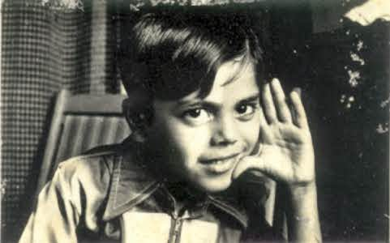
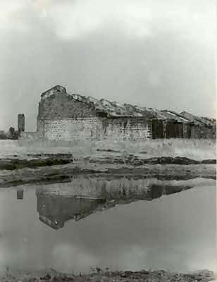
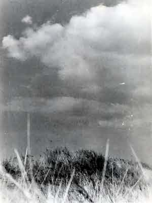
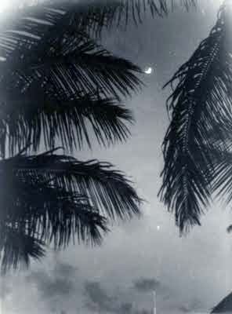
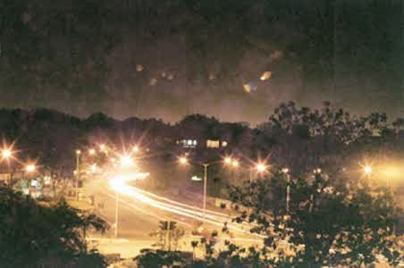
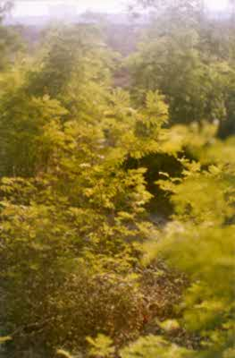
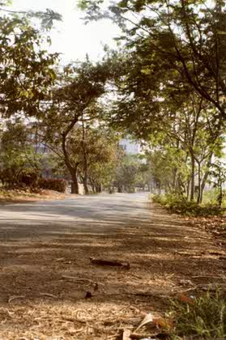
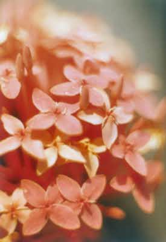
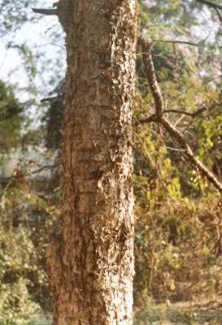

Please consider all the photographs for their compositional value only. Technically they are bad. The Zenith E model has a defunct light-meter. The shutter rail is rusted so even the shutter is inaccurate. The film for the b/w photos is Nova - I got it for Rs.27 (~USD 0.5) per roll. The developing and printing is also of the cheapest variety. (the novas where done in a small town in the outback)
Photographer : Vijay RaoThis photograph has been taken by my father. The subject is my friend Mandar. I find the photo fresh and appealing. The bold light on the face from the right creates a stark contrast. A splendid portrait. |
 |
|  |
Photographer : Abhijit RaoThis was taken on my first photographic trip - to Panhalgad - in Dec '95. I had gone alone and spent the whole day photographing. It was a cloudy dreary winter day. The symmetry of the ruined building and its shadow appealed to me. |
Photographer : Abhijit RaoOn the same trip as above. I tried to capture the sharp grass against the brilliant clouds. A medium yellow filter was used. But the film was bad, the development worse and the print the worst. Negatives were all lost. |
 |
|  |
Photographer : Abhijit RaoKolhapur Dec'95. From my aunt's terrace. I used to sleep on the Terrence in the chilly Kolhapur winter. An approximate exposure was taken as my Zenith does not have a working exposure meter. :-) |
Photographer : Abhijit RaoThis was taken from my Terrence in Mumbai in '95. The lights on the horizon are the Santa Cruz Airport lights. No Stand. Camera in hand with elbows on the parapet. Approximate exposure as no meter. Came out pretty well, considering... ;-) |
 |
|  |
Photographer : Abhijit RaoFerns. This is to illustrate the use of a aperture. Here I had kept the aperture widest open - 2. You see that the ferns nearer and farther from the point of focus become out of focus pretty fast. Here the depth of field is very small. Sometime in '96 |
Photographer : Abhijit RaoFrom the same spot as the above, but in another direction. Here to get maximum depth of field, I have kept the aperture at the smallest - 16. You can see that the leaves in the foreground and the building in the distant background are all clear. |
 |
|  |
Photographer : Abhijit RaoTrying out the macro attachment to my camera. It has a old fashioned system where you attach rings between the lens and the mount and increase the distance between the lens and the film. Lo Behold! The lens has turned into a macro lens. :-) |
Photographer : Abhijit RaoThere is a tree opposite my house. It has a weird flaky bark. I like it. |
 |